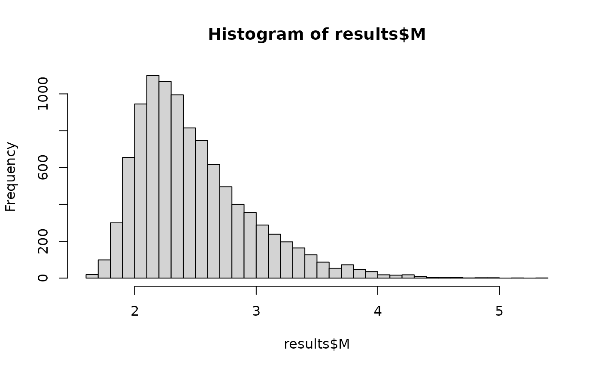
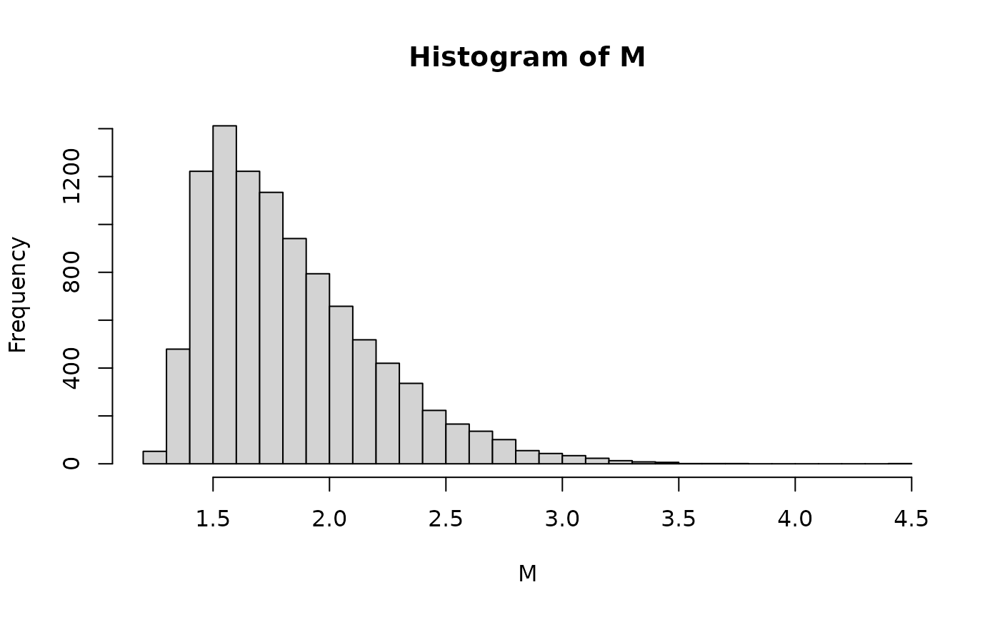

Type M and Type S errors
Phil Chalmers
February 10, 2026
Source:vignettes/Spower_TypeSM.Rmd
Spower_TypeSM.RmdGelman, A., & Carlin, J. (2014). Beyond Power Calculations: Assessing Type S (Sign) and Type M (Magnitude) Errors. Perspectives on Psychological Science, 9(6), 641-651. https://doi.org/10.1177/1745691614551642
In the publication above, Gelman and Carlin (2014) present conditional power analysis ideas to investigate Type S and Type M errors, which add augmentations to the usual evaluation of power via the average (expected) rejection of or support for across independent samples. Specifically:
-
Type S errors occur when a null hypothesis is
confidently rejected in light of the alternative being true, however
the rejection is in the wrong direction of the underlying
effect. Hence, conditional on a “statistical significance”
decision, what is the probability that the correct sign was inferred?
- Ideally Type S errors should be close to 0.
- In the limiting case, where
is true (no effect at all), then
Type S errors will be .50 as the sign will be a coin-flip - Type S errors are particularly prevalent in under powered research studies, where the sampling variability could result in detection of an effect that happens to be opposite what should have been detected from the population generating structure
-
Type M errors, on the other hand, occur when the
magnitude of a detected effect is much larger than the
expected effect given that “statistical significance” has occurred.
- Gelman and Carlin (2014) presented this as a ratio idea (), where large ratios indicate that the estimate had to be on average that many times higher than the expected value of the parameter (e.g., a Type M ratio of 8 indicates that of those effect sizes flagged as significant the effect estimate had to be on average 8 times larger than the true parameter).
Note that while the ratio for Type M errors gets at the idea nicely
as it indicates a type of conditional “exaggeration” effect, nothing
really precludes us from drawing further lines in the sand to better map
this concept into a power framework. For instance, if we would only be
confidence that our sample size is “large enough” if we only treat
ratios less than, say, 2 or 3, then TRUE/FALSE values could
be used to indicate that the observed sample has passed the desired
cut-off.
Type S errors via simulation
To demonstrate how to estimate Type S errors via simulation, the
following simulation experiment performs a two-sample
-test
with a “small” effect size (Cohen’s
)
with smaller sample sizes. The first implementation demonstrate the
logic with a user-defined data generation and analysis, while the second
approach demonstrates how the p_* functions defined within
Spower can be used instead — provided that they are
relevant to the power analysis under investigation.
Manual specification
In the manual implementation, where the user write both the data
generation and analysis components themselves into a single function,
the use of a while() loop is required to generate and
analyse the experiment until a significant
-value
is observed. When observed, the while() loop is then
terminated as the generated data matches the conditional significance
criterion, at which point the subsequent analyses relevant to the
compliment of Type S error (the correct sign decision) is
returned as a logical so that conditional power will be
reflected in the output.
l_two.t_correct.sign <- function(n, mean, mu = 0, alpha = .05, ...){
while(TRUE){
g1 <- rnorm(n)
g2 <- rnorm(n, mean=mean)
out <- t.test(g2, g1, mu=mu, ...)
if(out$p.value < alpha) break # if "significant" then break while() loop
}
mean_diff <- unname(out$estimate[1] - out$estimate[2])
mean_diff > mu # return TRUE if the correct sign is observed
}
l_two.t_correct.sign(n=15, mean=.2) |> Spower()##
## Execution time (H:M:S): 00:00:22
## Design conditions:
##
## # A tibble: 1 × 4
## n mean sig.level power
## <dbl> <dbl> <dbl> <lgl>
## 1 15 0.2 0.05 NA
##
## Estimate of power: 0.924
## 95% Confidence Interval: [0.919, 0.929]From the output from Spower(), the power
information reflects the estimated probability that the correct sign
decision was made given that “significance” was observed, while
provides the estimate of the associated Type S error (probability of an
incorrect sign given significance). As can be seen, there is about a
0.9241 probability of making the correct sign decision about the true
effect, and a complimentary probability estimate of 0.0759 of making a
Type S error.
With Spower, it’s of course possible to evaluate other
input properties associated with these power values. For instance,
suppose that we wish to know the requisite sample size such that Type S
errors are made with very little frequency (hence, high conditional sign
power). Further suppose we only want to make a Type S error, say, 1/100
times a significant effect is observed. The following code evaluates how
to obtain such an
estimate.
##
## Execution time (H:M:S): 00:00:18
## Design conditions:
##
## # A tibble: 1 × 4
## n mean sig.level power
## <dbl> <dbl> <dbl> <dbl>
## 1 NA 0.2 0.05 0.99
##
## Estimate of n: 47.7
## 95% Predicted Confidence Interval: [44.1, 51.7]Hence, one would need a sample size of approximately 48 per group in order to have a Type S error be approximately 1%.
Implementation using built-in p_t.test() function
Alternatively, if the simulation function and analysis already appear
in the context of the package definition then Spower’s
internally defined p_* functions can be used in place of
the complete manual implementation. This is beneficial as the data
generation and analysis components then do not need to be written by the
front-end user, potentially avoiding implementation issues using
previously defined simulation experiment code.
As a reminder, the default p_* functions in the package
always return a
-value
under the null hypothesis specified as this is the canonical way in
which power analysis via simulation is explored (cf. posterior
probability approaches). However, these simulation experiment functions
also contain a logical argument return_analysis, which if
set to TRUE will return the complete analysis object
instead of just the extracted
-value
(most commonly in the element p.value, though please use
functions like str() to inspect fully). For Type M/S errors
multiple components are clearly required, and therefore further
information should be extracted from the analysis objects directly to
accommodate.
To demonstrate, the built-in function p_t.test() is used
with the return_analysis = TRUE argument. The simulation
experiment still follows the while() loop logic to ensure
that “significance” is first flagged, however the internal function
definitions now provide the data generation and analyses so that the
front-end user does not have to.
l_two.t_correct.sign <- function(n, mean, mu = 0, alpha = .05, ...){
while(TRUE){
# return_analysis argument used to return model object
out <- p_t.test(n=n, d=mean, mu=mu, return_analysis=TRUE, ...)
if(out$p.value < alpha) break
}
mean_diff <- unname(out$estimate[1] - out$estimate[2])
mean_diff > mu
}
l_two.t_correct.sign(100, mean=.5)## [1] TRUESetting the sample size to
(hence, n=15) leads to the following power estimates.
l_two.t_correct.sign(n=15, mean=.2) |> Spower()##
## Execution time (H:M:S): 00:00:29
## Design conditions:
##
## # A tibble: 1 × 4
## n mean sig.level power
## <dbl> <dbl> <dbl> <lgl>
## 1 15 0.2 0.05 NA
##
## Estimate of power: 0.925
## 95% Confidence Interval: [0.920, 0.930]If at all possible it is recommended to use the
return_analysis approach as the simulation experiments
defined within the package have all been well tested. The trade-off, as
it is with all higher-level functions in R, is that there will often be
slightly more overhead than user-defined functions, though of course the
latter approach comes at the cost of safety.
Type M errors via simulation
Continuing with the above two-sample
-test
structure, suppose we’re interested in minimizing Type M errors to
ensure that significant results weren’t due to higher sampling
variability, ultimately resulting in significance being raised only when
unreasonably large effect sizes estimates are observed. For the purpose
of this power demonstration, suppose “unreasonably large” is defined
such that the ratio of the absolute (standardized) mean difference in a
two-sample
-test,
which was flagged as significant, was larger than three times the value
of the true (standardized) mean difference (hence,
M.ratio = 3).
Note that while focusing on an M.ratio = 3 provides the
sufficient means to study Type M errors using a cut-off logic to define
power, it is also possible to store the observed
values for further inspection too, which can be done in
Spower if a list or data.frame is
returned from the supplied experiment. For this to behave correctly,
however, output information relevant to the power
computations (probability values/logicals) must be explicitly specified
using Spower(..., select) so that other values returned
from the simulation are stored but not summarised.
As before, the first step is to define the experiment using the
conditional
-value
logic nested within a while() loop, followed by the power
(and extra) criteria of interest.
l_two.t_typeM <- function(n, mean, mu = 0,
alpha = .05, M.ratio = 3, ...){
while(TRUE){
# return_analysis argument used to return model object
out <- p_t.test(n=n, d=mean, mu=mu, return_analysis=TRUE, ...)
if(out$p.value < alpha) break
}
diff <- unname(out$estimate[1] - out$estimate[2])
M <- abs(diff)/mean
# return data.frame, where "retain" indicates the (logical) power information
data.frame(retain=M < M.ratio, M=M)
}With per group and a “small” standardized effect size of .2 gives the following.
# only use the "retain" information to compute power, though store the rest
l_two.t_typeM(n=50, mean=.2) |> Spower(select='retain') -> typeM
typeM##
## Execution time (H:M:S): 00:00:19
## Design conditions:
##
## # A tibble: 1 × 4
## n mean sig.level power
## <dbl> <dbl> <dbl> <lgl>
## 1 50 0.2 0.05 NA
##
## Estimate of power: 0.861
## 95% Confidence Interval: [0.854, 0.868]In this case, power represents the probability that,
given a significant result was observed, the resulting
ratio was less than the cutoff of 3 (hence, was less than three times
the true effect size). The compliment, which reflects the Type M error,
is then 0.139, which is indeed quite high as approximately 14% of the
samples flagged as significant would have needed rather large observed
effects to indicate that the sample was “unusual” in the statistical
significance sense.
With respect to the distribution of the observed
values themselves, these can be further extracted using
SimResults(). Notice that when plotted, the rejection
magnitudes are not normally distributed, which is to be expected given
the nature of the conditional simulation experiment.
results <- SimResults(typeM)
results## # A tibble: 10,000 × 5
## n mean sig.level retain M
## <dbl> <dbl> <dbl> <lgl> <dbl>
## 1 50 0.2 0.05 TRUE 2.47
## 2 50 0.2 0.05 TRUE 2.44
## 3 50 0.2 0.05 TRUE 2.57
## 4 50 0.2 0.05 TRUE 2.52
## 5 50 0.2 0.05 TRUE 2.16
## 6 50 0.2 0.05 FALSE 3.59
## 7 50 0.2 0.05 TRUE 1.78
## 8 50 0.2 0.05 TRUE 2.21
## 9 50 0.2 0.05 TRUE 2.79
## 10 50 0.2 0.05 FALSE 3.38
## # ℹ 9,990 more rows## mean SD min max
## 2.4863313 0.4696919 1.6198006 5.3105530
hist(results$M, 30)
Finally, increasing the sample size greatly helps with the Type M issues, as seen below by doubling the sample size below.
# double the total sample size
l_two.t_typeM(n=100, mean=.2) |> Spower(select='retain') -> typeM2
typeM2##
## Execution time (H:M:S): 00:00:14
## Design conditions:
##
## # A tibble: 1 × 4
## n mean sig.level power
## <dbl> <dbl> <dbl> <lgl>
## 1 100 0.2 0.05 NA
##
## Estimate of power: 0.991
## 95% Confidence Interval: [0.989, 0.993]where the Type M error for the cutoff is now
last <- getLastSpower()
1 - last$power## [1] 0.0088so approximately 1% of the significant results would have been due to an overly large effect size estimate. Again, the distributional properties of the observed values can be extracted and further analyzed should the need arise.
results <- SimResults(typeM2)
results## # A tibble: 10,000 × 5
## n mean sig.level retain M
## <dbl> <dbl> <dbl> <lgl> <dbl>
## 1 100 0.2 0.05 TRUE 1.43
## 2 100 0.2 0.05 TRUE 1.45
## 3 100 0.2 0.05 TRUE 1.83
## 4 100 0.2 0.05 TRUE 1.72
## 5 100 0.2 0.05 TRUE 1.98
## 6 100 0.2 0.05 TRUE 1.61
## 7 100 0.2 0.05 TRUE 2.01
## 8 100 0.2 0.05 TRUE 2.52
## 9 100 0.2 0.05 TRUE 1.48
## 10 100 0.2 0.05 TRUE 1.49
## # ℹ 9,990 more rows## mean SD min max
## 1.8333941 0.3667748 1.2174419 4.4615467
hist(results$M, 30)
Type M errors are of course intimately related to precision criteria in power analyses, and in that sense are an alternative way of looking at power planning to help from relying on “extreme” observations. Personally, the notion of thinking in terms of “ratios relative to the true population effect size” feels somewhat unnatural, though the point is obviously important as seeing significance flagged only when unreasonably large effect sizes occur is indeed troubling (e.g., replication issues).
In contrast then, I would recommend using precision-based power planning over focusing explicitly on Type M errors when power planning as this seems more natural, where obtaining greater precision in the target estimates will necessarily decrease the number of Type M error in both the “extreme” and “underwhelming” sense of the effect size estimates (the ladder of which Type M errors do not address as they do not focus on non-significant results by definition). More importantly, precision criteria are framed in the metric of the parameters relevant to the data analyst rather than on a metricless effect size ratio, which in general should be more natural to specify.